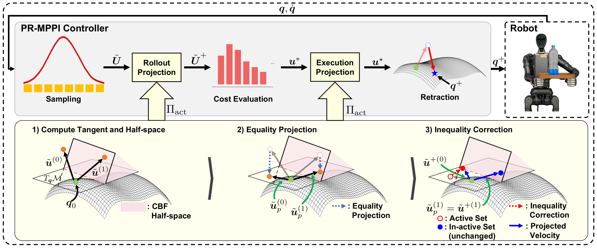

Model Predictive Path Integral (MPPI) control is widely used in manipulation for its gradient-free, parallel handling of non-convex costs. Manipulation tasks, however, often impose constraints that hold throughout the motion: a closed kinematic chain that two grasping arms keep exactly, or joint limits and obstacle clearances that are never crossed. Standard MPPI handles such constraints only through the cost, as soft penalties that hold approximately and fail under a strong task cost.
Can a sampling-based controller keep an equality exactly, and never let an inequality correction break it?
To address this, we propose Projection-Retraction MPPI (PR-MPPI), which enforces the constraints inside the sampled dynamics. At every rollout step, the sampled velocity is projected to satisfy both constraint types: the equality restricts it to a subspace, and each inequality to a half-space within that subspace, so inequality handling never breaks the equality. This projection, however, satisfies the constraints only to first order, and a finite step leaves a small drift off the equality. Therefore, we retract the returned command back onto the constraint, so that the commanded configuration satisfies the equality to numerical tolerance, independently of task weighting.
We validate PR-MPPI on 14-DoF dual-arm systems. In simulation, the returned commands satisfy the closed-chain equality to numerical tolerance through a joint-limit stress test and randomized obstacle avoidance, while the measured trajectories retain the joint-limit and obstacle margins. On real hardware, the arms of a Unitree H1-2 humanoid reactively avoid a moving obstacle.
Project every rollout, retract the command
Project every rollout
Each sampled velocity is restricted to the equality tangent space and the active inequality half-spaces before the state is propagated.
Preserve both constraint types
Inequality corrections remain inside the equality tangent space, preventing safety corrections from breaking the closed-chain grasp.
Retract the command
The executed finite step is restored to the equality manifold to the prescribed numerical tolerance, independently of task weighting.
Contributions
- We propose PR-MPPI, a constrained sampling-based MPC framework in which a single velocity-space projection carries both constraint types inside the sampled dynamics: each active inequality is corrected within the equality tangent subspace, so inequality handling cannot break the equality regardless of which margins are active. A retraction step then removes the finite-step drift that the first-order projection leaves on the equality, returning the command to satisfy the equality to numerical tolerance.
- We establish a command-level equality property and characterize the finite-step inequality error. Whenever the retraction terminates, the returned command satisfies the equality constraint to the prescribed numerical tolerance, independent of the MPPI weighting. Under the stated assumptions, the per-step inequality error introduced by the finite step and the retraction is \(\mathcal{O}(\Delta t^2)\), and the resulting invariant layer can be absorbed by the safety margin.
- We validate PR-MPPI on a 14-DoF dual-arm Franka system in simulation, where the retracted commands satisfy the closed-chain equality to numerical tolerance while the measured trajectories retain the joint-limit and obstacle margins under aggressive task commands, and demonstrate reactive avoidance of a moving obstacle on the dual arms of a Unitree H1-2 humanoid.
Constraints inside the sampled dynamics
PR-MPPI puts equality and inequality constraints inside the sampled dynamics, then restores the executed finite step to the equality manifold.

Define the constraint geometry
The equality defines a manifold. With \(\bar h(q)=h(q)-h_{\mathrm{safe}}\), a safety buffer shifts each inequality into a CBF guard condition.
Project every sampled velocity
Before propagation, each sample is projected onto the equality tangent space and the inequality half-spaces. The solve starts with violating or near-boundary margins, then adds the most violated omitted half-space until every residual is nonpositive.
Update and filter the nominal horizon
MPPI averages the filtered rollout sequences. Because averaging removes their individual guarantees, the entire nominal horizon is filtered again while propagating its own predicted states.
Retract the executed step
The first projected step is tangent-feasible but leaves \(\mathcal{O}(\Delta t^2)\) equality drift. Gauss–Newton retraction removes it to the prescribed tolerance.
A 14-DoF dual-arm Franka holding a closed chain
Joint-limit stress test
A dual-arm Franka system lowers a level tray from \((0.45,0,1.0)\,\mathrm{m}\) toward an IK target at \((0.45,0,0.55)\,\mathrm{m}\). Both fourth joints start at \(-2.01\,\mathrm{rad}\), while the target \(-2.41\,\mathrm{rad}\) lies beyond the imposed lower bound \(-2.35\,\mathrm{rad}\). A \(0.05\,\mathrm{rad}\) safety margin shifts the guard boundary to \(-2.30\,\mathrm{rad}\), activating both joint-limit constraints nearly simultaneously.
| Method | Chain trans. (m) | Chain rot. (rad) | Tilt (rad) | Max. bound viol. (rad) | Compute time (ms) |
|---|---|---|---|---|---|
| DQ-MPPI | 0.004 ± 0.000 | 0.004 ± 0.001 | 0.061 ± 0.047 | 0.082 | 238.948 ± 19.473 |
| PR-MPPI Full | 0.003 ± 0.000 | 0.003 ± 0.000 | 0.002 ± 0.000 | 0.000 | 19.351 ± 1.216 |
Randomized obstacle avoidance
The level tray moves from \((0.5,0,0.5)\,\mathrm{m}\) to \((0.5,0,1.0)\,\mathrm{m}\) past a spherical obstacle of radius \(0.05\,\mathrm{m}\). Thirty paired obstacle placements sample \(x\in[0.40,0.60]\,\mathrm{m}\) and \(y\in[-0.10,0.10]\,\mathrm{m}\), with every controller evaluated at the same placements. Full PR-MPPI uses a \(0.02\,\mathrm{m}\) tray-obstacle safety margin and no tray-obstacle collision penalty.
| Method | Success / Total | Stuck | Tray drop | Collision |
|---|---|---|---|---|
| MC-MPPI | 13 / 30 | 17 | 0 | 0 |
| DQ-MPPI | 18 / 30 | 1 | 11 | 0 |
| PR-MPPI Full | 30 / 30 | 0 | 0 | 0 |
| PR-MPPI execution-only inequality | 29 / 30 | 1 | 0 | 0 |
Reactive avoidance of a moving obstacle
The two 7-DoF arms of a Unitree H1-2 humanoid hold a loaded tray under the same closed-chain grasp while a person advances a hand-held obstacle from varying directions. The current obstacle position is supplied at every control cycle and held fixed over the rollout horizon, so PR-MPPI replans reactively without an obstacle-motion prediction model.
The same sampling–projection–retraction pipeline used in simulation is deployed online with only the platform kinematics replaced. The arms reshape their configuration inside the equality tangent space to create clearance, while retraction returns grasp-consistent commands and the measured tray remains level.
Implementation details
Cost function
The terminal term uses the same tracking residual with terminal weights. Zero-weight terms are inactive (Full PR-MPPI: \(w_{\mathrm{jl}}=0\) in Exp. 1 and \(w_{\mathrm{tray,obs}}=0\) in Exp. 2); the equality \(\boldsymbol c(\boldsymbol q)=0\) is enforced geometrically rather than added as a penalty.
| Cost term | Exp. 1 | Exp. 2 |
|---|---|---|
| Running tracking | \(w_q=30{,}000\) | \(w_p=60,\;w_R=50\) |
| Terminal tracking | \(w_{q,T}=300{,}000\) | \(w_{p,T}=500,\;w_{R,T}=50\) |
| Control effort | \(w_u=0.02\) | \(w_u=0.02\) |
| Joint limit | \(w_{\mathrm{jl}}=0\) | \(w_{\mathrm{jl}}=1{,}000\) |
| Tray–obstacle | 0 (off) | 0 (Full), 1,800 (Exec-only) |
| Arm–obstacle | 0 (off) | 1,800 |
| Arm–arm | 1,000 | 1,000 |
| Intra-arm self | 150 | 150 |
| Tray–arm | 0 (off) | 1,000 |
Parameters and hardware
MPPI
- Rollouts: \(K=1000\)
- Horizon: \(T=30\) steps
- Time step: \(\Delta t=1/30\,\mathrm{s}\)
- Exploration: \(\sigma=0.03\,\mathrm{rad/s}\)
Constraint layer
- Eight-dimensional closed-chain equality
- Relative-pose constraint plus tray roll and pitch
- CBF gain: \(\gamma_i=5\)
- Projection in rollouts and before execution
CUDA acceleration
- Fused CUDA kernels accelerate rollout projection and inequality correction
- Batched constraint filtering across \(K\) rollouts
- Reduced Python dispatch and intermediate tensor overhead
- NVIDIA RTX 4060 Ti, 8 GB VRAM
BibTeX
@article{lee2026prmppi,
title={Projection-Retraction MPPI: Exact Constraint-Manifold Control for Manipulators},
author={Lee, Seulchan and Park, Leesai and Kang, Minhyeong and Kim, Sanghyun},
journal={arXiv preprint arXiv:2608.07573},
year={2026}
}